Research
From 140 posts on two coaching pages, 12 references Mehr likes and 6 she never wants.
Real photos and objects, paper, frames and brackets, room to breathe. One device per series.
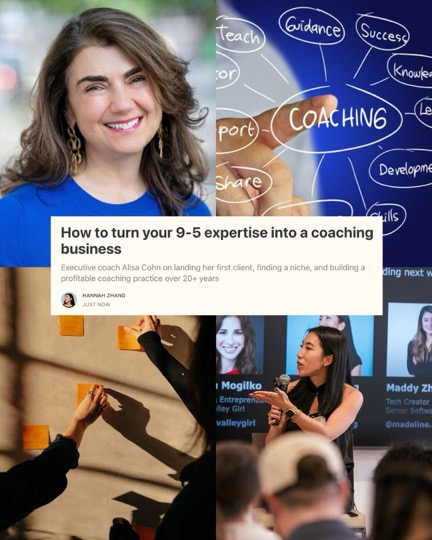
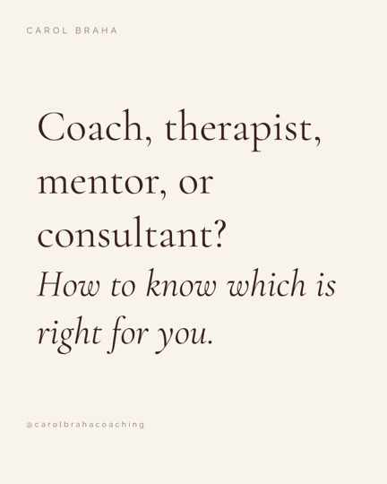
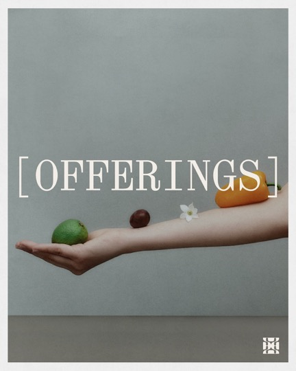
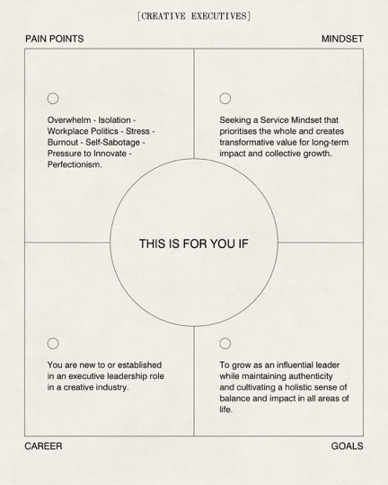
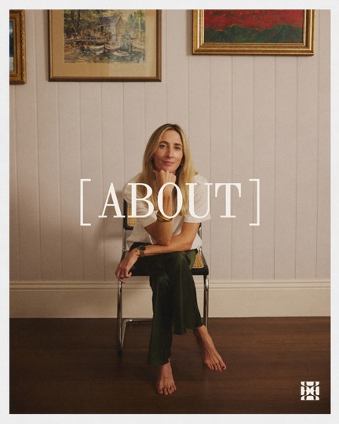
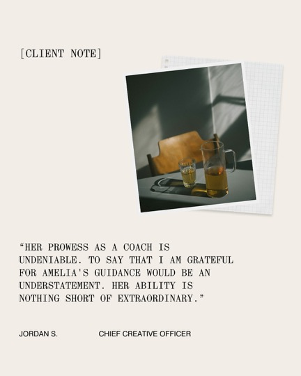
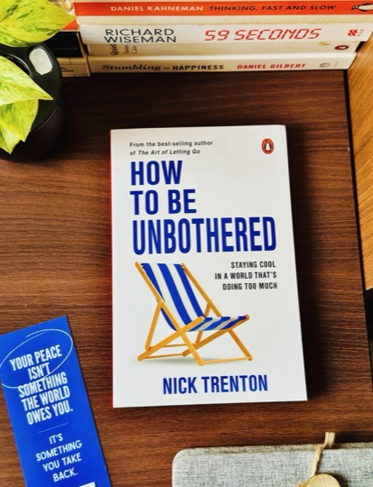
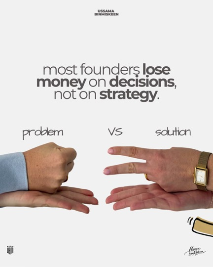
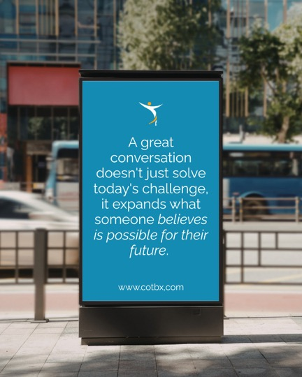
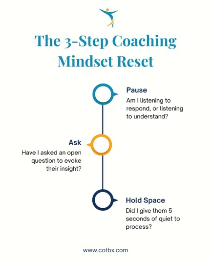
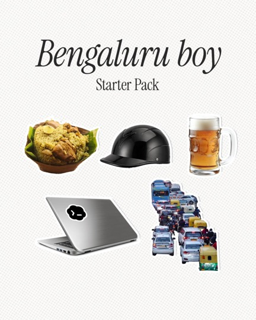
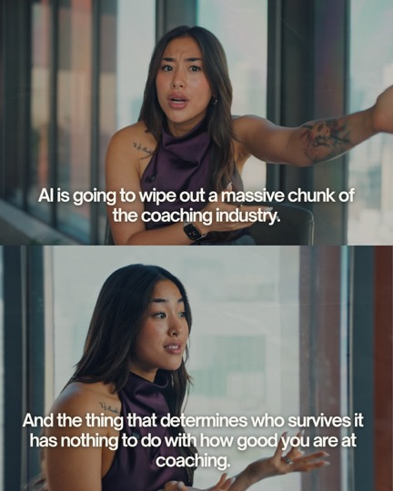
Anything that looks like a growth-hack template.
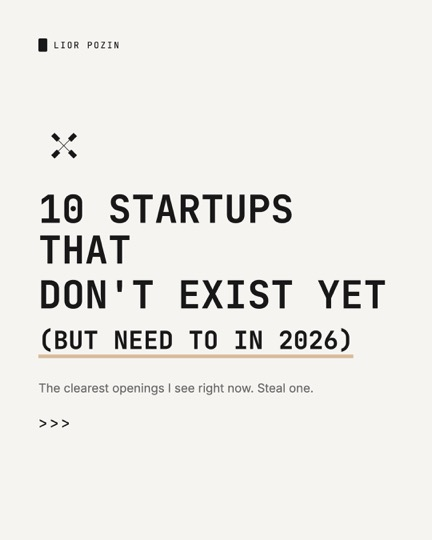
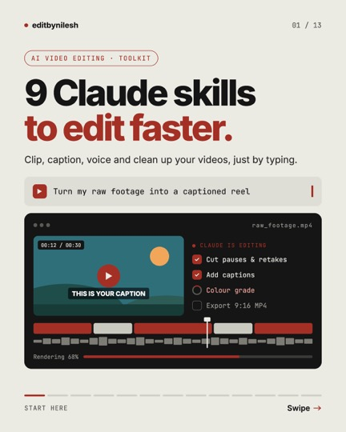
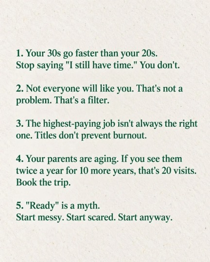
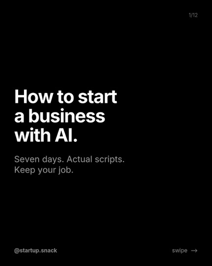
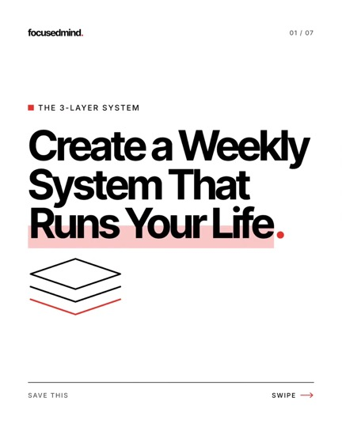
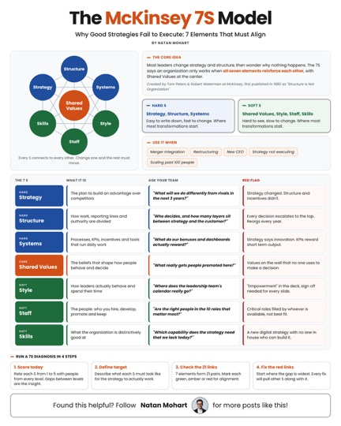